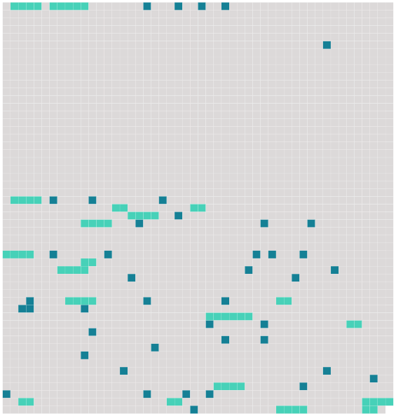

Longueur nb maillons : 63 mentions |
 |
» [M. de Courville] était [son ami et son camarade] depuis l'enfance. Gentilhomme agriculteur, [il] vivait tranquille avec [sa] femme, [sa] fille et [son] gendre, M. [12 phrases]
» [40 phrases] Un jour, [M. de Courville] , [qui] le reconduisait et l' [écoutait] s'extasier sur sa nouvelle amie, lui [demanda] brusquement : « Pourquoi ne l'épousez -vous pas?? [6 phrases]
Puis serrant précipitamment la main de [son compagnon] , il murmura : « Au revoir, [mon ami] , » et disparut à grands pas dans la nuit. [2 phrases] Ayant pris à part [M. de Courville] : « [Vous] avez eu là une fameuse idée. [3 phrases]
» Voulez -vous que [je] m'en charge?? [11 phrases] Or, un soir, comme Mme Vilers chantait en s'accompagnant au piano, une bonne vint, avec un grand mystère, chercher [M. de Courville] , en [lui] disant tout bas qu'un monsieur [le] demandait. [1 phrases] Dès qu' [il] vit [son] vieil ami, [il] lui saisit les mains, et, d'une voix un peu fatiguée : « J'arrive à l'instant, [mon cher] , et j'accours chez vous, je n'en puis plus. [6 phrases]
» [4 phrases] ne m'interrogez pas, je [vous] prie, ce serait trop pénible à dire, mais [soyez] sûr que j'agis en... [2 phrases] . Je n'ai pas le droit, [vous] entendez, pas le droit, d'épouser cette dame. J'attendrai qu'elle soit partie pour revenir chez [vous] ; il me serait trop douloureux de la revoir. [6 phrases] Un soir, comme il avait fortement dîné et qu'il titubait un peu, M. de Coutelier, en fumant [sa] pipe le soir avec [M. de Courville] , lui dit : « Si [vous] saviez comme je pense souvent à votre amie, [vous] auriez pitié de moi.
» [3 phrases]
»
» Depuis vingt ans, [mon ami] , je ne vis que pour la chasse. Je n'aime que ça, [vous] le savez, je ne m'occupe que de ça. [3 phrases] [vous] savez bien... [Songez] donc?? [6 phrases] [vous] y êtes. [2 phrases] Bref, au moment de m'engager devant le maire et le prêtre à.. à.. ce que [vous] savez, j'ai eu peur. [8 phrases] Je [vous] assure qu'elles ont fait ce qu'elles ont pu... [2 phrases] . Mais que voulez [-vous] , elles se retiraient toujours... [8 phrases] « [Vous] comprenez que, dans ces circonstances, devant cette constatation, je ne pouvais que... [3 phrases]
» [Il] serra gravement les mains du baron en lui disant : « [Je] vous plains, » et le reconduisit jusqu'à mi-chemin de sa demeure. Puis, lorsqu' [il] se trouva seul avec [sa] femme, [il] lui dit tout, en suffoquant de gaieté. Mais Mme de Courville ne riait point ; elle écoutait, très attentive, et lorsque [son mari] eut achevé, elle répondit avec un grand sérieux : « Le baron est un niais, [mon cher] ; il avait peur, voilà tout. [1 phrases]
» quand on aime sa femme, entendez [-vous] , cette chose -là... [1 phrases]
» |
 |
La ressource peut être téléchargée sur la page Ortolang
Si vous avez des questions ou vous voyez des erreurs, merci d'envoyer un mail à silvia.federzoni89@gmail.com
Site développé par S. Federzoni (contact)